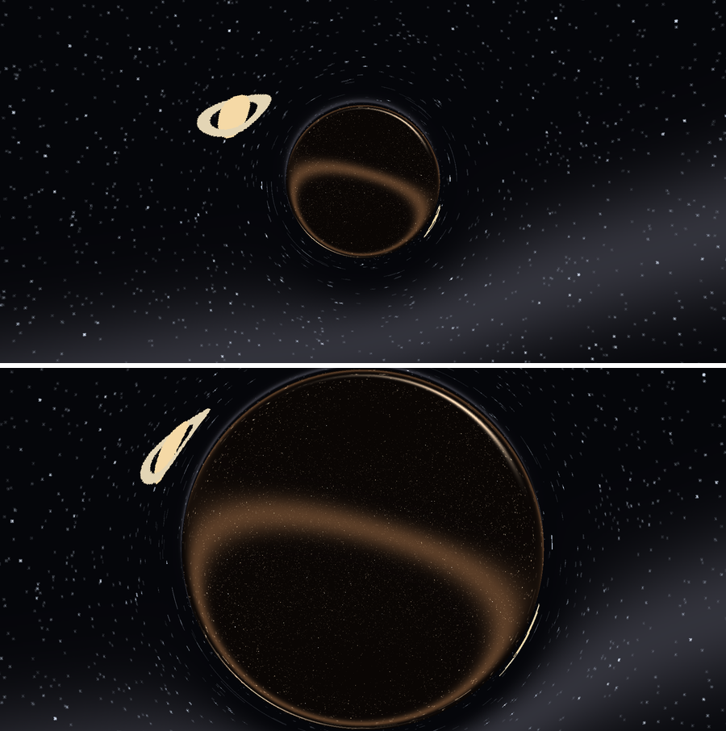
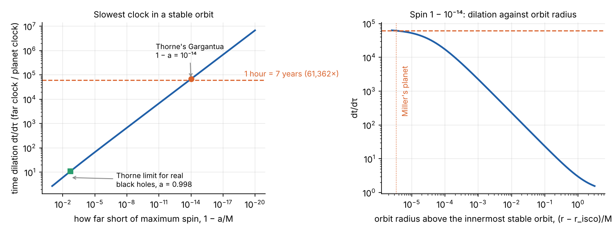

millerView = {
const host = htl.html`<div></div>`;
const mod = await import(new URL("miller.js", document.baseURI).href);
mod.mountMiller(host);
return host;
}Interstellar is built on one big idea that is mentioned only in passing: our universe is a membrane, a brane, in a larger space with an extra dimension, the bulk. Nearly every mystery in the film depends on it: where the wormhole came from, why the “ghost” in Murph’s bedroom acts through gravity, and how Cooper sends a message back through time from inside a black hole.
This post follows the story in order and checks the physics at each step. Two explainers cover the background: Branes and the Bulk, on extra dimensions and why only gravity can cross them, and de Sitter and Anti-de Sitter Space, on the curved geometry that Kip Thorne uses to build the film’s bulk. Most of the physical detail comes from Thorne’s book The Science of Interstellar. Thorne was the film’s scientific adviser and an executive producer.
The story’s starting point: a wormhole near Saturn
About half a century before the film begins, a wormhole appeared near Saturn. The film never says how it was found. Thorne’s book discusses how a wormhole could be detected through gravitational waves, and it would also be hard to miss once seen: through a telescope it is a sphere showing a different sky.
The wormhole is not natural. Professor Brand says that someone put it there. “They”, whoever they are, appear to be looking out for us. The film eventually implies that they are humans from the far future, who have evolved or engineered their way into the bulk.
What the wormhole looks like
Double Negative, the effects company that rendered the black hole Gargantua (rebuilt on this blog in Gargantua), designed the wormhole with Thorne and published its equations. In their model, space around the wormhole has the shape
\[ ds^2 = -dt^2 + d\ell^2 + r(\ell)^2\left(d\theta^2 + \sin^2\theta\,d\phi^2\right), \]
where \(\ell\) is distance along the axis through the wormhole and \(r(\ell)\) is the circumference of the sphere at that distance, divided by \(2\pi\). Going inwards, \(r\) shrinks to the throat radius \(\rho\) and then grows again on the far side: a different region of the universe. Christopher Nolan chose a short wormhole, with a throat length of 1% of its radius, and a gentle “lensing width” of 5% of its radius, so that the images would not confuse an audience with multiple copies of each star.
With those parameters, tracing light rays backwards from a camera gives this:

The wormhole is a crystal ball. Everything on the far side appears in the sphere, and our own sky is bent round its rim. Wormholes are valid solutions of Einstein’s equations, but there is a serious catch: a wormhole held open by ordinary matter pinches off faster than light could cross it. Michael Morris and Thorne showed in 1988 that keeping one open needs exotic matter, with negative energy density as measured by a passing light ray. Small amounts of negative energy exist in quantum physics (the Casimir effect), but nobody knows whether enough could be gathered in one place to hold a wormhole open.
Where the bulk comes in
Thorne’s answer for the film is the bulk. In his version:
- our universe is a brane with one extra space dimension beyond it;
- around our brane is a layer of anti-de Sitter warping, sandwiched between two confining branes. This keeps gravity on our brane following Newton’s inverse square law;
- the confining branes would buckle and collide with ours, destroying the universe, unless a field in the bulk holds them in shape;
- the same kind of bulk field, controlled by the bulk beings, holds the wormhole open, so no exotic matter is needed.
The wormhole joins two places that are enormously far apart within our universe, near Saturn and near Gargantua in another galaxy. Romilly’s explanation in the film, folding a sheet of paper and pushing a pencil through, is the standard picture: the throat does not run through our space at all.
Gravity as the messenger
If they live in the bulk, why don’t the beings just send a message? Because, in brane-world physics, light and matter are confined to our brane. Gravity alone can cross the bulk (why). So anything that reaches us from the bulk must arrive as gravity.
That is how the film’s ghost works:
- books fall from Murph’s shelf in a pattern that turns out to be Morse code;
- dust settles on her bedroom floor in stripes that encode, in binary, the coordinates of NASA’s hidden base. That is how Cooper finds NASA, and how the mission begins;
- later, a watch’s second hand twitches to carry, in Morse code, the quantum data Murph needs.
In the film, the scientists call these “gravitational anomalies”, and NASA has been studying them. The twist, revealed at the end, is that the ghost is Cooper himself, reaching back through the bulk.
The Lazarus missions
Beyond the wormhole, NASA found a system of planets around Gargantua, a supermassive black hole. Several looked as if they might support life. About ten years before the film, the Lazarus missions sent twelve astronauts through, each alone, each to a different candidate world. Each was to send back a simple signal, yes or no, and then hibernate until rescue.
Three kept sending positive signals: Miller, Edmunds and Mann. The Endurance mission is sent to visit them. The film then gives each signal a twist. Mann’s was deliberately faked. Miller’s looked recent but was not, because time on her planet runs about 60,000 times slower than outside.
Miller’s planet: one hour, seven years
“Every hour we spend on that planet will be seven years back on Earth.”
Thorne writes that Nolan treated this as non-negotiable, so Thorne had to find a black hole that allows it. Time slows near a black hole, but a planet must stay in a stable orbit, and around a non-spinning black hole the closest stable orbit is too far out: clocks there run only about 1.4 times slower. The answer is spin. Around a spinning black hole, stable orbits can go much closer to the horizon. Thorne gives Gargantua a mass of 100 million Suns and a spin short of the maximum possible by one part in 100 trillion, \(1 - a/M = 10^{-14}\).
That claim can be checked exactly. For a circular orbit in the equatorial plane of a spinning (Kerr) black hole, with \(G = c = M = 1\), the ratio of time far away to time on the planet is
\[ \frac{dt}{d\tau} = \frac{r^{3/2} + a}{r^{3/4}\sqrt{r^{3/2} - 3r^{1/2} + 2a}} , \]
from Bardeen, Press and Teukolsky (1972). The orbit must also lie outside the innermost stable circular orbit, inside which it would spiral into the hole (Kerr black hole explainer). The largest dilation possible is therefore at that innermost orbit. Spins this close to the maximum need about 40 significant digits, so the calculation uses arbitrary precision arithmetic:

The results:
- Thorne’s spin works, with almost no margin. The film needs a factor of 61,362. With \(1 - a/M = 10^{-14}\), the innermost stable orbit gives 67,526, so Miller’s planet can orbit just outside it, where the dilation has fallen to exactly 61,362. Any spin less than \(1 - 1.33 \times 10^{-14}\) could not do it at all.
- The dilation grows as the cube root of the spin’s closeness to maximum. Each factor of 1,000 closer gives a factor of 10 more dilation.
- The planet is moving fast. Relative to the space around it, which is itself being dragged round by the black hole’s spin, the planet moves at half the speed of light. Seen from far away it circles Gargantua every 1.7 hours. By the planet’s own clocks, that orbit takes a tenth of a second.
- Real black holes don’t spin this fast. Gas falling in would spin a black hole up to about \(a = 0.998\), as Thorne himself calculated in 1974, beyond which radiation from the disk slows it. That allows a time dilation of about 11 at most. Thorne acknowledges the film’s spin is extreme.
Try other spins, and other lengths of stay:
The default stay of 3 hours 20 minutes reproduces the film: at the film’s factor, it costs 23 years, and when Cooper and Brand return to the Endurance, Romilly has waited 23 years.
The tesseract and Plan A
Professor Brand’s Plan A is to lift humanity off the dying Earth by controlling gravity. That needs a quantum theory of gravity, and the data to build it exists only at a black hole’s singularity, hidden behind the horizon. Cooper falls into Gargantua, and instead of being destroyed he is caught in the tesseract: a structure built by the bulk beings, in which time in Murph’s bedroom is laid out like a dimension of space. He can move to any moment, but act only through gravity. He sends the data TARS collected, through the watch’s second hand. Decades later, Murph uses it to solve the equation, and humanity leaves Earth.
Thorne’s book explains the tesseract as a structure in the bulk, with one more dimension than our space, whose faces open onto the bedroom at different times. He is clear that this part of the film is speculation. Nobody knows what happens deep inside a black hole: that is precisely what a quantum theory of gravity would have to explain.
The story also closes a loop. Cooper’s messages from the tesseract send his younger self to NASA, which sends him to Gargantua, which puts him in the tesseract. The film suggests the bulk beings set the loop up, which raises the usual question of who started it.
What is real, what is speculation, what is licence
Thorne sorted the film’s science into three kinds, and the same sorting works here:
| Element | Status |
|---|---|
| Gargantua’s appearance, gravitational lensing | Established: general relativity, tested many times |
| Time dilation near a black hole | Established, but the film’s factor needs an unrealistically fast spin |
| Wormholes as solutions of Einstein’s equations | Established as mathematics |
| A traversable wormhole | Speculation: needs exotic matter, or Thorne’s bulk fields |
| Our universe as a brane in a bulk | Speculation, serious: brane-world models of 1998–99, limited by experiment to extra dimensions smaller than about 30 micrometres |
| Gravity as the only thing crossing the bulk | Speculation, serious: a feature of brane-world models |
| Bulk beings, the tesseract, messages into the past | Licence |
| Measuring quantum gravity data inside a black hole | Licence |
The film’s achievement is that the licence sits on top of real physics. The wormhole’s appearance follows from its equations, Miller’s dilation follows from Thorne’s black hole, and the idea that a message from the bulk would arrive as gravity follows from how brane-world models work.
Summary
- The bulk is the film’s unifying idea: a larger space in which our universe is a brane.
- The wormhole is a passage through the bulk, which looks like a sphere showing another sky. Thorne holds it open with bulk fields rather than exotic matter.
- Only gravity crosses the bulk, so the ghost, the dust and the watch all act through gravity.
- One hour on Miller’s planet equals seven years outside only if Gargantua spins within \(1.33 \times 10^{-14}\) of its maximum. Thorne’s choice, \(10^{-14}\), just works. A realistic spin gives a factor of about 11.
Code: src/interstellar, with wormhole.py (the wormhole renderer), miller.py (time dilation at 60-digit precision) and figs.py.
References
- K. S. Thorne, The Science of Interstellar (W. W. Norton, 2014).
- O. James, E. von Tunzelmann, P. Franklin and K. S. Thorne, “Visualizing Interstellar’s wormhole”, American Journal of Physics 83, 486 (2015).
- M. S. Morris and K. S. Thorne, “Wormholes in spacetime and their use for interstellar travel: a tool for teaching general relativity”, American Journal of Physics 56, 395 (1988).
- J. M. Bardeen, W. H. Press and S. A. Teukolsky, “Rotating black holes: locally nonrotating frames, energy extraction, and scalar synchrotron radiation”, Astrophysical Journal 178, 347 (1972).
- K. S. Thorne, “Disk-accretion onto a black hole. II. Evolution of the hole”, Astrophysical Journal 191, 507 (1974).
- J.-P. Luminet, “The warped science of Interstellar” (2015).
- L. Randall and R. Sundrum, “An alternative to compactification”, Physical Review Letters 83, 4690 (1999).